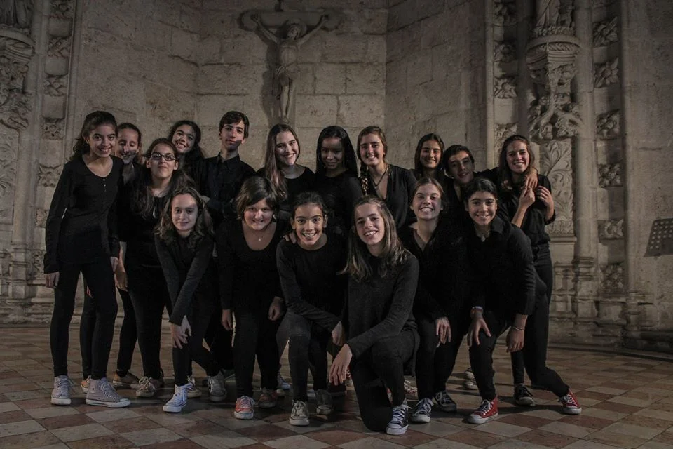

Self-esteem
Sharing one's voice helps every young person feel valued and heard.

Youth choir · Cascais
Vocal technique, stage, identity and world.
Why this name?
Soul means exactly that — soul. VoxSoul was created for an age when the voice is changing, and so is the person. Its roots trace back to 2002, when, after a World Symposium on Choral Music in Minneapolis, VoxLaci's Youth Choir was created specifically for teenagers aged 12 to 17. Today, between 10 and 18, singing is still much more than learning notes: it's experimenting, taking risks, stepping on stage, working as a team and discovering an identity of one's own. We work on vocal technique, harmony, movement, interpretation, repertoire and stage presence — but also confidence, commitment and belonging. No one here needs to sound like anyone else. The goal is to discover what's unique in your own voice. Music begins when we stop imitating and start being.
Ages 10–18
VoxLaci's youth choir in Cascais, for ages 10 to 18. Vocal technique, stage and belonging, with or without experience.
VoxSoul is VoxLaci's youth choir. The weekly rehearsal deepens vocal technique, harmony, repertoire and stage presence while building belonging and lasting relationships. As across VoxLaci, being an amateur here carries the word's oldest sense: someone who loves what they do.
Why sing here
Sharing one's voice helps every young person feel valued and heard.
Breathing, tuning, vocal control and singing in harmony.
Opportunities to perform in Portugal and abroad, discover cultures and create memories.
Your voice starts here
Other paths